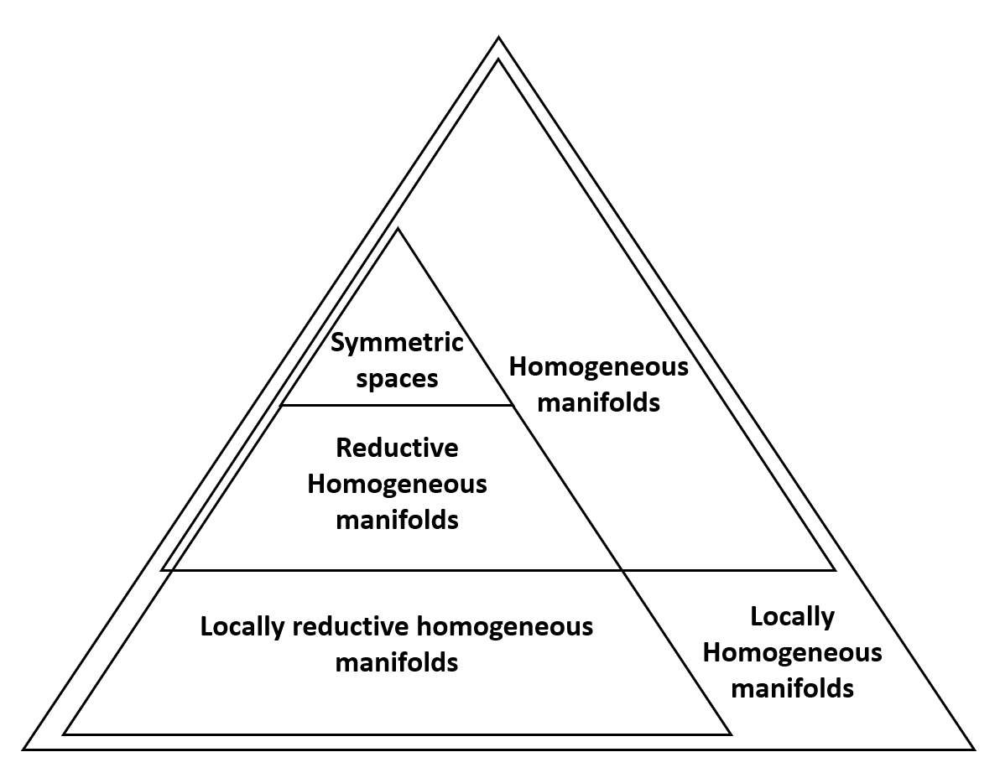
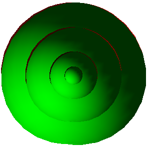

Contents
Preliminaries
Homogeneous manifolds
On the history of Ambrose-Singer Theorems
My thesis: Pseudo-Riemannian homogeneous structures
The homogeneous geometries of complex hyperbolic space
Reduction of hom. pseudo-Kähler structures by one-dim. fibers
My thesis: Generalizations of Ambrose-Singer Theorems
The Ambrose-Singer Theorem for general homogeneous manifolds
Symplectic Ambrose-Singer manifolds
The Ambrose-Singer Theorem for cohomogeneity one Riemannian manifolds
Conclusions and open problems
References
Contents
Preliminaries
Homogeneous manifolds
On the history of Ambrose-Singer Theorems
My thesis: Pseudo-Riemannian homogeneous structures
The homogeneous geometries of complex hyperbolic space
Reduction of hom. pseudo-Kähler structures by one-dim. fibers
My thesis: Generalizations of Ambrose-Singer Theorems
The Ambrose-Singer Theorem for general homogeneous manifolds
Symplectic Ambrose-Singer manifolds
The Ambrose-Singer Theorem for cohomogeneity one Riemannian manifolds
Conclusions and open problems
References
Homogeneous manifolds
An algebraic definition
A homogeneous manifold is a quotient $G/H$ of a Lie group $G$ by a closed subgroup $H$, endowed with the unique differentiable structure making $\pi \colon G \to G/H$ a submersion.
A geometric definition
A homogeneous manifold $M$ is a differentiable manifold such that there exists a Lie group $G$ acting on the left on $M$ and the action is $\mathcal{C}^{\infty}$ and transitive.
Examples
Most of the classical manifolds that have been studied are homogeneous, for example,
- Lie groups: $\mathbb{R}^n, \mathbb{C}^n, \mathbb{T}^n, ...$
- Spheres: $\mathbb{S}^n = \mathrm{SO}(n+1)/\mathrm{SO}(n)$.
- Real hyperbolic spaces: $\mathbb{R}\mathrm{H}^n= \mathrm{SO}(n,1)/\mathrm{SO}(n)$.
- Complex hyperbolic spaces: $\mathbb{C}\mathrm{H}^n= \mathrm{SU}(n,1)/\mathrm{S}(\U(n)\U(1))$.
- Projective spaces: $\mathbb{C}\mathrm{P}^n = \mathrm{U}(n+1)/\mathrm{U}(n) \times \mathrm{U}(1)$.
- Real Grassmannians: $\mathrm{SO}(p+q)/ \mathrm{SO}(p) \times \mathrm{SO}(q)$.
- Complex Grassmannians: $\mathrm{U}(p+q)/\mathrm{U}(p) \times \mathrm{U}(q)$.
$K$-invariant homogeneous manifolds
$K$-invariant homogeneous manifold
Let $M$ be a manifold and $K$ be a tensor field on $M$. We say that $(M,K)$ is homogeneous if there exists a Lie group $G$ acting $\mathcal{C}^{\infty}$ and transitively on $M$ and preserving the tensor field $K$.
This is a sharpened version of:
- Riemannian homogeneous manifolds when $K = g$ is a metric tensor.
- Symplectic homogeneous manifolds when $K = \omega$ is a symplectic form.
- Complex homogeneous manifolds when $K = J$ is a complex tensor.
- Hermitian homogeneous manifold when $K = \{g, J\}$.
$K$-invariant locally homogeneous manifolds
$K$-invariant locally homogeneous manifold
Let $M$ be a manifold and $K$ be a tensor field on $M$. We say that $(M,K)$ is locally homogeneous if there exists a Lie pseudogroup $\mathcal{G}$ acting $\mathcal{C}^{\infty}$ and transitive on $M$ and preserving the tensor field $K$.
Reductive homogeneous manifolds
A Riemannian homogeneous manifold $G/H$ always satisfies that the Lie algebra $\mathfrak{g}$ of $G$ can be decomposed as $\mathfrak{g} = \mathfrak{h} + \mathfrak{m}$ where $\mathfrak{h}$ is the Lie algebra of $H$ and $\mathfrak{m}$ is an $\mathrm{Ad}(H)-$invariant subspace of $\mathfrak{g}$.
Thus, this motivates the definition:
A homogeneous manifold $M = G/H$ is said to be reductive if the Lie algebra $\mathfrak{g}$ of $G$ can be decomposed as
$\mathfrak{g} = \mathfrak{h} + \mathfrak{m}$ where $\mathfrak{h}$ is the Lie algebra of $H$ and
$\mathfrak{m}$ is an $\mathrm{Ad}(H)$-invariant subspace of $\mathfrak{g}$.
The canonical connection
Associated with every reductive homogeneous manifold $M = G/H$ with reductive decomposition $\mathfrak{g} = \mathfrak{h} + \mathfrak{m}$, there exists a unique affine connection, $\tilde{\nabla}$ called the canonical connection such that
- For every $g \in G$, the map $L_{g}$ is affine.
- For every point $p \in M$ and $X \in \mathfrak{m}$, the curves $\mathrm{exp}(tX) \cdot p$ are complete geodesics, and the parallel transport along these curves is given by the linear map $(L_{\mathrm{exp}(tX)})_*$ at $p$.
- The connection satisfies: \[ \tilde{\nabla} \tilde{R} = 0, \quad \tilde{\nabla} \tilde{T} = 0. \]
Ambrose-Singer connections
Ambrose-Singer connection
The connection $\tilde{\nabla}$ is an Ambrose-Singer connection if \[ \tilde{\nabla} \tilde{R} = 0, \quad \tilde{\nabla} \tilde{T} = 0. \] Moreover, we say that it is associated with $K$ if $\TT K = 0$.
The connection $\tilde{\nabla}$ is an Ambrose-Singer connection if \[ \tilde{\nabla} \tilde{R} = 0, \quad \tilde{\nabla} \tilde{T} = 0. \] Moreover, we say that it is associated with $K$ if $\TT K = 0$.
This thesis focuses on the interplay between
Ambrose-Singer connections
Homogeneous manifolds
Contents
Preliminaries
Homogeneous manifolds
On the history of Ambrose-Singer Theorems
My thesis: Pseudo-Riemannian homogeneous structures
The homogeneous geometries of complex hyperbolic space
Reduction of hom. pseudo-Kähler structures by one-dim. fibers
My thesis: Generalizations of Ambrose-Singer Theorems
The Ambrose-Singer Theorem for general homogeneous manifolds
Symplectic Ambrose-Singer manifolds
The Ambrose-Singer Theorem for cohomogeneity one Riemannian manifolds
Conclusions and open problems
References
On the history of Ambrose-Singer Theorems
The "society" of Riemannian transitive actions is organized as follows

The Cartan Theorem, 1929
If the Levi-Civita connection is an Ambrose-Singer connection, then according to Cartan's theorem
[Cartan, 1929] Let $(M,g)$ be a connected and simply-connected complete Riemannian manifold. Then, $M$ is symmetric if and only if $\nabla R = 0$, where $R$ is the curvature tensor of the Levi-Civita connection $\nabla$.
Alternatively, without the topological condiditions
[Cartan, 1929] Let $(M,g)$ be a Riemannian manifold. Then, $M$ is locally symmetric if and only if $\nabla R = 0$, where $R$ is the curvature tensor of the Levi-Civita connection $\nabla$.
Ambrose-Singer Theorem, 1958
[Ambrose, Singer, 1958] Let $(M,g)$ be a connected and simply-connected complete Riemannian manifold. Then, the following statements are equivalent:
- The manifold $M$ is Riemannian homogeneous.
- The manifold $M$ admits a linear connection $\tilde{\nabla}$ satisfying: \[ \tilde{\nabla} R = 0,\quad \tilde{\nabla} S = 0,\quad \tilde{\nabla} g = 0 \]
Tricerri Theorem, 1992
[Tricerri, 1992] A Riemannian manifold $(M,g)$ is locally homogeneous if and only if there exists a linear connection $\tilde{\nabla}$ satisfying: \[ \tilde{\nabla} R = 0,\quad \tilde{\nabla} S = 0,\quad \tilde{\nabla} g = 0, \] where $R$ is the curvature tensor of the Levi-Civita connection $\nabla$ and $S = \nabla - \tilde{\nabla}$.
It is important to note,
$\tilde{\nabla} R = 0,\quad \tilde{\nabla} S = 0,\quad \tilde{\nabla} g = 0$
$\tilde{\nabla} \tilde{R} = 0,\quad \tilde{\nabla} \tilde{T}= 0,$
$\tilde{\nabla} S= 0,\quad \tilde{\nabla} g = 0$
Riemannian homogeneous structures
Riemannian homogeneous structure
Let $(M, g)$ be a Riemannian manifold. A tensor field $S$ is a homogeneous structure if \[ \tilde{\nabla} \curv = 0,\quad \tilde{\nabla} \tors = 0, \quad \tilde{\nabla} S= 0,\quad \tilde{\nabla} g = 0 \] where $\nabla$ is the Levi-Civita and $S = \nabla - \tilde{\nabla}$.
Let $(M, g)$ be a Riemannian manifold. A tensor field $S$ is a homogeneous structure if \[ \tilde{\nabla} \curv = 0,\quad \tilde{\nabla} \tors = 0, \quad \tilde{\nabla} S= 0,\quad \tilde{\nabla} g = 0 \] where $\nabla$ is the Levi-Civita and $S = \nabla - \tilde{\nabla}$.
Is there a method to discern whether a Riemannian manifold is homogeneous?
What essential information is required to distinguish among different homogeneous manifolds?
Tricerri-Vanhecke program
The aim of this program is to thoroughly investigate homogeneous and locally homogeneous Riemannian manifolds, with a specific focus on the analysis of Ambrose-Singer connections and Riemannian homogeneous structures.
This program relies on two principles:
To characterize a specific Riemannian homogeneous space, one must understand all its Riemannian homogeneous structures
Homogeneous structures can be used to distinguish transitive actions.
Infinitesimal models
Let $V$ be a vector space of dimension $n$. Let
\begin{equation*}
\curv \colon V \wedge V \to \mathrm{End}(V), \quad \tors \colon V \to \mathrm{End}(V),
\end{equation*}
be linear homomorphisms and let $K_0$ be a set of linear tensors on $V$. The tupla of tensors $(\curv,\tors)$ is an infinitesimal model associated with $K_0$ if it satisfies
\begin{align}
&\tors_XY +\tors_YX = 0,& &\curv_{XY} \cdot \tors = \curv_{XY} \cdot \curv = \curv_{XY}\cdot K_0 = 0, \\
&\SC{XYZ} \curv_{XY}Z + \tors_{\tors_XY}Z = 0,& &\SC{XYZ} \curv_{\tors_XY Z} = 0,
\end{align}
where $\SC{XYZ}$ is the cyclic sum, and $\curv_{XY}$ acts in a natural way in the tensor algebra of $V$ as a derivation.
First principle
To characterize a specific Riemannian homogeneous space, one must understand all its Riemannian homogeneous structures
[Lastaria, Tricerri, 1993] For every Riemannian infinitesimal model $(V, \curv, \tors, K_0 = g_0)$ there exists an Ambrose-Singer Riemannian manifold $(M, g, \TT)$ such that, for a point $p\in M$, the metric tensor $g$ at $p$ is $g_0$, and the curvature and torsion of $\TT$ at $p$ are $\curv$ and $\tors$, respectively. In particular, $(M,g)$ is locally homogeneous.
Specifically, understanding all the Riemannian homogeneous structures that a given manifold admits is equivalent to knowing all its infinitesimal models.
First principle (2)
To characterize a specific Riemannian homogeneous space, one must understand all its Riemannian homogeneous structures
The existence of any homogeneous structures ensures that, for any two points, there exist a local isometry sending one point to the other which is affine with respect to the Ambrose-Singer connection. However, it is not always globally homogeneous.
To compute all the homogeneous structures of a manifold.
Second principle
Homogeneous structures can be used to distinguish transitive actions.
Let $V$ be the tangent space at one point, and consider the space of Riemannian homogeneous structures, \[ \mathcal{S}(V) =\Big\{ S \in V^*\otimes V^* \wedge V^*:\: g(S_X Y,Z) + g(S_XZ,Y) = 0 \Big\}. \] Since, \[ \TT S = 0, \] it follows that $S$ is invariant by parallel transport along closed curves.
Second principle (2)
Homogeneous structures can be used to distinguish transitive actions.
Symbolically, \[ \curv_{XY} \cdot S = 0 \] where $\curv$ is the curvature tensor of $\TT$.
Specifically, $\curv_{XY} \subset \O(n)$; thus, pointwise, by decomposing the module $\mathcal{S}(V)$ into $\O(n)$-irreducible submodules, we derive necessary conditions for two distinct homogeneous structures to be isomorphic.
Second principle (3)
Homogeneous structures can be used to distinguish transitive actions.
The space $S(V)$ is decomposed into three $\O(n)$-submodules \begin{equation}\label{P.eq:decom} \begin{alignedat}{111} \mathcal{S}_1 (V) & = \Bigl\{ S \in \mathcal{S} (V):\: S_{XYZ}=g(X,Y)\theta(Z)-g(X,Z)\theta(Y), \,\theta\in V^* \Bigr\},\\ \mathcal{S}_2 (V) & = \Bigl\{ S \in \mathcal{S} (V):\: \SC{XYZ} S_{XYZ}=0, \,c_{12}(S)=0 \Bigr\},\\ \mathcal{S}_3 (V) & = \Bigl\{ S \in \mathcal{S} (V):\: S_{XYZ}+S_{YXZ}=0 \Bigr\}, \end{alignedat} \end{equation} where $c_{12}(S)(Z)=\sum_{i=1}^{n}S_{e_ie_iZ}$ for any orthonormal basis $\{e_1,\ \ldots\ ,e_{n}\}$.
Pseudo-Riemannian Ambrose-Singer Theorem
[Kiričenko, 1980]; [Gadea-Oubiña, 1997]; [Luján, 2014]
Let $(M,g)$ be a connected and simply-connected pseudo-Riemannian manifold. Then, the following statements are equivalent:
- The manifold $M=G/H$ is a reductive pseudo-Riemannian homogeneous and $G$ leaves invariant the tensor fields $P_1, \ldots , P_r$.
- The manifold $M$ admits a complete linear connection $\tilde{\nabla}$ satisfying: \[ \tilde{\nabla} R = 0,\quad \tilde{\nabla} S = 0,\quad \tilde{\nabla} g = 0, \quad \tilde{\nabla} P_i = 0, \quad \forall i \in \{1, \ldots, r \} \]
The pseudo-Riemannian "society"
The "society" of pseudo-Riemannian transitive actions is organized as follows

Contents
Preliminaries
Homogeneous manifolds
On the history of Ambrose-Singer Theorems
My thesis: Pseudo-Riemannian homogeneous structures
The homogeneous geometries of complex hyperbolic space
Reduction of hom. pseudo-Kähler structures by one-dim. fibers
My thesis: Generalizations of Ambrose-Singer Theorems
The Ambrose-Singer Theorem for general homogeneous manifolds
Symplectic Ambrose-Singer manifolds
The Ambrose-Singer Theorem for cohomogeneity one Riemannian manifolds
Conclusions and open problems
References
My thesis: Pseudo-Riemannian homogeneous structures
The aims of the first part of my thesis are:
To study all the homogeneous descriptions of the complex hyperbolic space and all its homogeneous structures.
To relate different classes of homogeneous structure types throughout the reduction process of homogeneous structures.
Contents
Preliminaries
Homogeneous manifolds
On the history of Ambrose-Singer Theorems
My thesis: Pseudo-Riemannian homogeneous structures
The homogeneous geometries of complex hyperbolic space
Reduction of hom. pseudo-Kähler structures by one-dim. fibers
My thesis: Generalizations of Ambrose-Singer Theorems
The Ambrose-Singer Theorem for general homogeneous manifolds
Symplectic Ambrose-Singer manifolds
The Ambrose-Singer Theorem for cohomogeneity one Riemannian manifolds
Conclusions and open problems
References
Tricerri-Vanhecke program for Kähler manifolds
[Abbena, Garbiero, 1988]; [Batat, Gadea, Oubiña, 2011]
If $p+q \geq 6$, the space $$\mathcal{K} (V) = \{ S \in V^* \otimes V^* \wedge V^* : g(S_X JY, Z) = - g(S_X Y, JZ) \}$$ is decomposed into mutually orthogonal and irreducible $\mathrm{U} (p,q)$-submodules as
\begin{equation*}
\mathcal{K}(V) = \mathcal{K}_1 (V) \oplus \mathcal{K}_2 (V) \oplus\mathcal{K}_3 (V) \oplus\mathcal{K}_4 (V).
\end{equation*}
The complex hyperbolic space
$\CH(n) = \frac{\SU(n,1)}{S(\U(n)\U(1))}$
The complex hyperbolic space is the unique, complete and simply-connected, Kähler manifold with constant holomorphic sectional curvature equal to $-1$. Associated with the action of $\SU(n,1)$ there are two important Lie Algebras decompositions: \begin{align*} \su(n,1) &= \s( \u(n) + \u(1)) + \m \\ &\\ \su(n,1) &= \s( \u(n) + \u(1)) +\a + \n \end{align*} and we can write $\SU(n,1) = S(\U(n)\U(1)) \ A \ N$
The complex hyperbolic space (2)
$ \su(n,1) = \s( \u(n) + \u(1)) + \m $
This decomposition is reductive and the canonical connection coincides with the Levi-Civita connection, thus $S=0$.
$\su(n,1) = \s( \u(n) + \u(1)) +\a + \n$
This decomposition is non-reductive. However, it is particularly helpfull because $A \ N$ acts simply and transitively on $\CH(n)$, that is, $\CH(n) = A \ N$ is a Lie group.
Homogeneous descriptions.
Associated with the Iwasawa decomposition, we have:
[Castrillón, Gadea, Swann, 2009]
The connected groups of isometries acting transitively on $\CH(n)$ are the full isometry group $\SU(n,1)$
and the groups $G = F_rN$, where $N$ is the nilpotent factor in the Iwasawa decomposition of $\SU(n,1)$
and $F_r$ is a connected closed subgroup of $\S(\U(n-1)\U(1)) \ A\subset \S(\U(n)\U(1))\ A$ with non trivial projection to $A$.
\begin{align*} \g = \h + \a_r + \n \subset \s( \u(n-1) + \u(1)) +\a + \n \\ \\ \pi_{\a} (\mathfrak{a}_r) = \a \Rightarrow (\pi_{\a})^{-1} (A_0) = A_0 + H_r \in \a_r \end{align*}
Reductive decompositions
For every reductive decomposition $\g = \h + \m$. The subspace $\m$ can be described as the graph of an $\h$-equivariant map \begin{equation*} \varphi_r \colon \a_r + \n \to \h . \end{equation*} We denote this with $\tilde{\cdot} = \mathrm{Id}_{\a_r+\n} + \varphi_r$. Finally, we denote $$ \varphi = \varphi_r \circ ((\pi_{\a})^{-1} \times \mathrm{Id}_{\n}) $$
Because of the formula, \begin{equation*} [X,Y] = \curv_{XY} - \tors_X Y. \end{equation*}
The canonical connections
[CC22] The curvature $\curv$ and torsion $\tors$ of a canonical connection $\TT$ of a non-symmetric description $\CH(n)=G/H$ are given by, \begin{align*} \curv_{\tilde{A}_0 \tilde{X}} &= - \varphi(f X),\quad \curv_{\tilde{A}_0 \tilde{N}_2 } = -2 \varphi(N_2), \quad \curv_{\tilde{N}_2 \tilde{X}} = 0\\ \curv_{\tilde{X} \tilde{Y}} &= -2 \omega_0 (X, Y) \varphi(N_2) - \big[\varphi (X), \varphi (Y)\big] \end{align*} and \begin{align*} \tors_{\tilde{A}_0} \tilde{X} &= - \widetilde{fX}, \quad \tors_{\tilde{A}_0} \tilde{N}_2 = - 2 \tilde{N}_2, \quad \tors_{\tilde{N}_2} \tilde{X} = \big[\varphi(N_2), X\big]\\ \tors_{\tilde{X}} \tilde{Y} &= -2 \omega_0 (X, Y) \tilde{N}_2 - \big[\varphi (X), \tilde{Y}\big] - \big[\tilde{X}, \varphi(Y)\big] \end{align*} where $X$, $Y \in \n_1$ and $f = \Id + \mathrm{ad}_{H_{r0}}$.
The Kähler homogeneous structures
By using the formula, \begin{equation*} 2g \big(S_BC, D\big) = g\big([B,C]_{\m}, D\big) - g\big([C,D]_{\m},B\big) + g\big([D,B]_{\m},C\big) \end{equation*} we have:
[CC22] The homogeneous tensor $S$ associated with a canonical connection $\TT$ reads \begin{equation} \begin{split} g (S_BC, D) &= \alpha_D g(B,C) - \alpha_C g(B,D) + \alpha_{JD}g(B,JC) - \alpha_{JC}g (B,JD) \\ & -\alpha_{JB} \omega(\tilde{X}_C , \tilde{X}_D) + g([B', C], D) + \alpha_B g( C_r , D) \end{split} \end{equation} for any $B$, $C$, $D \in \m$.
The main result
[CC22] The holonomy algebras of canonical connection on $\mathbb{C}\mathrm{H} (n)$, are $\mathfrak{s}\mathfrak{u}(n,1)$ and all reductive Lie algebras of compact type \[ \mathfrak{k} = \mathfrak{k}_0 + \mathfrak{k}_{ss} \] with $\mathfrak{k}_0 \cong \mathbb{C}^r \times \mathbb{R}^s$ abelian where $s \geq 0$, and $r \geq 0$, satisfying any of the following two constraints of dimensions, \[ 3r + 2s + \dim(\mathfrak{k}_{ss}) \leq n-1, \] or, $s \geq 1$ and \[ 3r + 2(s-1) + 1 + \dim (\mathfrak{k}_{ss}) \leq n-1. \]
Kähler Homogeneous Structures on $\CH(n)$
[CC22] Let \( S \) be a Kähler homogeneous structure on \( \CH(n) \) and \( \mathfrak{hol} \) its holonomy algebra. Then:
- \( S = 0 \) if and only if \( \mathfrak{hol} = \s(\u(n) + \u(1)) \).
- \( S \) belongs strictly to \( \mathcal{K}_{2+4}(V) \) if and only if \( \mathfrak{hol} \) is one dimensional with \( \curv_{\tilde{A}_0 \tilde{N}_2} \tilde{X} = J \tilde{X} \), for \( \tilde{X} \in \tilde{\n}_1 \), and \( \a_r = \a \subset \ker \varphi \).
- \( S \) belongs strictly to \( \mathcal{K}_{2+3+4}(V) \) if and only if one of the following two occurs:
- The holonomy algebra \( \mathfrak{hol} \) is one dimensional with \( \curv_{\tilde{A}_0 \tilde{N}_2} \tilde{X} = \lambda J \tilde{X} \), for \( \tilde{X} \in \tilde{\n}_1 \) \( \lambda \neq 1 \), \( \a_r = \a \) and \( \varphi(\a) = \varphi(\n_2) = \mathfrak{hol} \).
- The holonomy algebra \( \mathfrak{hol} \) is trivial and \( [\varphi(A_0) + H_r, \tilde{X}] = \beta J\tilde{X} \), for \( \tilde{X} \in \tilde{\n}_1 \) where \( H_r = A_r - A_0 \) and \( \beta \in \R \).
- Otherwise, \( S \) is of general type.
The homogeneous geometries of complex hyperbolic space
Homogeneous descriptions.
↓
Canonical connections.
↙
Homogeneous structures.
↘
↘
Holonomy algebras.
↙
Descriptions of homogeneous types.
Thesis Contributions (AGAG)
These results are published in:
[CC22]
José Luis Carmona Jiménez and Marco Castrillón López. "The homogeneous holonomies of complex hyperbolic space". Annals of Global Analysis and Geometry. Vol. 62 (2022), pp. 391-411. DOI: 10.1007/s10455-022-09852-2.
Contents
Preliminaries
Homogeneous manifolds
On the history of Ambrose-Singer Theorems
My thesis: Pseudo-Riemannian homogeneous structures
The homogeneous geometries of complex hyperbolic space
Reduction of hom. pseudo-Kähler structures by one-dim. fibers
My thesis: Generalizations of Ambrose-Singer Theorems
The Ambrose-Singer Theorem for general homogeneous manifolds
Symplectic Ambrose-Singer manifolds
The Ambrose-Singer Theorem for cohomogeneity one Riemannian manifolds
Conclusions and open problems
References
The Reduction procedure of homogeneous structures
Let $(\bar{M}, \bar{g})$ and $(M, g)$ be two pseudo-Riemannian manifold and $H$ a Lie group of isometries such that there is a map \begin{align*} \pi \colon \bar{M} \to M \end{align*} is an $H$-principal bundle with non-degenerate fibers. Indeed, $M = \bar{M}/H$ is the reduced manifold of $\bar{M}$ by the Lie group $H$.
If $\bar{M}$ is homogeneous, then $M$ is homogeneous.
- Let $\bar{S}$ be a hom. structure on $\bar{M}$, is $\pi_* (\bar{S})$ a homogeneous structure on $M$?
The Reduction procedure of homogeneous structures (2)
- Let $\bar{S}$ be a hom. structure on $\bar{M}$, is $\pi_* (\bar{S})$ a homogeneous structure on $M$?
[Castrillón, Luján, 2015] develop under which conditions $\pi_* (\bar{S})$ is a homogeneous structure.
For instance, they study in depth the reduction process of Sasakian spaces to Kähler by one dimensional fibers.
Reduction of hom. pseudo-Kähler structures by one-dim. fibers
Nevertheless, the converse question was open:
- Can we study carefully the reduction process of Kähler spaces to almost contact metric?
In [CC20], if $(\bar{M},\bar{g},J)$ is Kähler and $\bar{S} \in \mathcal{K}_{2+4}(V)$
↓
Then, $(M, g, \phi, \xi)$ is Sasakian, Kenmotsu or $\mathcal{C}_{12}(V)$ and $S$ is of linear type.
The reduction theorem
[CC20] Let $(\bar{M},\bar{g},\bar{J})$ be a pseudo-Kähler manifold equipped with a pseudo-Kähler homogeneous structure $\bar{S}$ invariant under the flow group $G$ of a complete strictly regular unit vector field $\theta$. Assume that $\bar{S} \in \mathcal{K}_2(\bar{V})+\mathcal{K}_4(\bar{V})$, parametrized by $G$-invariant vector fields $\chi_2$ and $\chi_4$. Then, the component $(S_{-,0})\in\mathcal{S}_{-,0}(V)$ of the reduced homogeneous almost-contact metric structure $S$ of the almost contact metric manifold $(M=\bar{M}/G,g,\phi,\xi,\eta)$ belongs to $\mathcal{C}_5(V) \oplus \mathcal{C}_6(V) \oplus \mathcal{C}_{12}(V)$ with projections \begin{align*} (S_{-,0})_{(5)}(X,Y,Z) &= \varepsilon \omega(\chi)\left( \eta(Y) g(X, \phi Z) - \eta(Z) g(X, \phi Y) \right)\\ (S_{-,0})_{(6)}(X,Y,Z) &= \varepsilon \eta(\pi_*\chi) \left( \eta(Z) g(X, Y) - \eta(Y) g(X, Z) \right) \\ (S_{-,0})_{(12)} (X,Y,Z)&= \varepsilon \eta(X) \left(\eta(Y)g(Z, \pi_* \chi) - \eta(Z) g(Y, \pi_* \chi) \right) \end{align*} where $\chi =\chi_2+\chi_4$.
The reduction theorem (2)
[CC20] Let $(\bar{M},\bar{g},\bar{J})$ be a pseudo-Kähler manifold equipped with a pseudo-Kähler homogeneous structure $\bar{S}$ invariant under the flow group $G$ of a complete strictly regular unit vector field $\theta$. Assume that $\bar{S} \in \mathcal{K}_2(\bar{V})+\mathcal{K}_4(\bar{V})$, parametrized by $G$-invariant vector fields $\chi_2$ and $\chi_4$. Then, the component $(S_{+})\in\mathcal{S}_{+}(V)$ of the reduced homogeneous almost-contact metric structure $S$ of the almost contact metric manifold $(M=\bar{M}/G,g,\phi,\xi,\eta)$ belongs to $\mathcal{CS}_2(V) \oplus \mathcal{CS}_4(V) \oplus \mathcal{CS}_6(V)$, and its expression is \begin{align*} (S_+) (X,Y,Z) &= \quad g(X,Y) g(Z, \rho) - \varepsilon \eta(X) \eta(Y)g(Z, \rho) -g(X,Z) g(Y, \rho)\\ &\quad + \varepsilon \eta(X) \eta(Z) g(Y, \rho) + g(X, \phi Y) g(\phi Z, \rho ) -g(X,\phi Z)g(\phi Y, \rho) \\ &\quad -2 g(\phi Y,Z)g(\phi X, \hat{\rho})+ 2 \varepsilon \eta(X) \omega(\hat{\chi}) g(\phi Y, Z), \end{align*} where $\chi =\chi_2+\chi_4$, $\hat{\chi} =\chi_2- \chi_4$ and $\rho = \pi_* \chi - \eta(\pi_* \chi) \xi $, $\hat{\rho} = \pi_* \hat{\chi} - \eta(\pi_* \hat{\chi}) \xi $.
Thesis Contributions (Axioms)
These results are published in:
[CC20]
José Luis Carmona Jiménez and Marco Castrillón López. "Reduction of Homogeneous pseudo-Kähler Structures by One-Dimensional Fibers". Axioms. Vol. 9, No. 3 (2020), Art. No. 94. DOI: 10.3390/axioms9030094.
Contents
Preliminaries
Homogeneous manifolds
On the history of Ambrose-Singer Theorems
My thesis: Pseudo-Riemannian homogeneous structures
The homogeneous geometries of complex hyperbolic space
Reduction of hom. pseudo-Kähler structures by one-dim. fibers
My thesis: Generalizations of Ambrose-Singer Theorems
The Ambrose-Singer Theorem for general homogeneous manifolds
Symplectic Ambrose-Singer manifolds
The Ambrose-Singer Theorem for cohomogeneity one Riemannian manifolds
Conclusions and open problems
References
Generalizations of Ambrose-Singer Theorems
Many generalizations of the Ambrose-Singer Theorem and the Tricerri-Vanhecke program have been discovered over the years. However, all of them share two common characteristics:
There must exist a metric tensor.
They only apply to transitive actions.
My thesis: Generalizations of Ambrose-Singer Theorems
The aims of the second part of my thesis are:
To generalize the Ambrose-Singer Theorem for general homogeneous manifolds.
In particular, we apply Tricerri-Vanhecke program for symplectic geometry.
To generalize the Ambrose-Singer Theorem for cohomogeneity one Riemannian manifolds.
Contents
Preliminaries
Homogeneous manifolds
On the history of Ambrose-Singer Theorems
My thesis: Pseudo-Riemannian homogeneous structures
The homogeneous geometries of complex hyperbolic space
Reduction of hom. pseudo-Kähler structures by one-dim. fibers
My thesis: Generalizations of Ambrose-Singer Theorems
The Ambrose-Singer Theorem for general homogeneous manifolds
Symplectic Ambrose-Singer manifolds
The Ambrose-Singer Theorem for cohomogeneity one Riemannian manifolds
Conclusions and open problems
References
The picture for Riemannian Ambrose-Singer Theorems
$(M,g)$ is a Riemannian homogeneous manifold
→
There exists a linear connection $\TT$ such that: \[ \TT \curv = 0,\ \TT \tors = 0, \ \TT g = 0 \]
↘
There exists a Riemannian infinitesimal model $(V, \curv, \tors, g)$
↔
$(M,g)$ is a locally homogeneous Riemannian manifold
↔
There exists a linear connection $\TT$ such that: \[ \TT \curv = 0,\ \TT \tors = 0, \ \TT g = 0 \]
[AS,1958]
Simply-connected
Complete
Simply-connected
Complete
←
[N,1952]
[T,1993]
[LT,1993]
The picture for Ambrose-Singer for general homogeneous manifolds
$(M,K)$ is a
connected and simply-connected
reductive homogeneous manifold
↔
There exists a complete linear connection $\TT$ such that: \[ \TT \curv = 0,\ \TT \tors = 0, \ \TT K = 0 \]
↘
There exists an infinitesimal model $(V, \curv, \tors, K)$
↔
$(M,K)$ is a reductive locally homogeneous manifold
↔
There exists a linear connection $\TT$ such that: \[ \TT \curv = 0,\ \TT \tors = 0, \ \TT K = 0 \]
The Ambrose-Singer Theorem for general homogeneous manifolds
[CC22*] Let $M$ be a connected and simply-connected manifold. Then, the following statements are equivalent:
- The manifold $M=G/H$ is reductive homogeneous with $G$-invariant tensors $P_1, \ldots ,P_r$.
- The manifold $M$ admits a complete linear connection $\TT$ satisfying: \begin{equation} \label{AS.eq:1} \TT \curv = 0,\quad \TT \tors = 0,\quad \TT P_i = 0 \quad i = 1, \ \dots \ , r \end{equation}
where $\curv$ and $\tors$ are the curvature and torsion tensors of $\TT$.
The picture for Ambrose-Singer for general homogeneous manifolds
$(M,K)$ is a
connected and simply-connected
reductive homogeneous manifold
↔
There exists a complete linear connection $\TT$ such that: \[ \TT \curv = 0,\ \TT \tors = 0, \ \TT K = 0 \]
↘
There exists an infinitesimal model $(V, \curv, \tors, K)$
↔
$(M,K)$ is a reductive locally homogeneous manifold
↔
There exists a linear connection $\TT$ such that: \[ \TT \curv = 0,\ \TT \tors = 0, \ \TT K = 0 \]
The Ambrose-Singer Theorem for locally homogeneous manifolds
[CC22*] Let $(M,K)$ be a differentiable manifold with a geometric structure $K$. Then the following assertions are equivalent:
- The manifold $(M,K)$ is a reductive locally homogeneous space, associated with the Lie pseudo-group $\mathcal{G}$.
- There exists a connection $\TT$ such that: \begin{equation*} \TT \curv = 0, \quad \TT \tors = 0, \quad \TT K = 0, \end{equation*}
where $\curv$ and $\tors$ are the curvature and torsion tensors of $\TT$.
The picture for Ambrose-Singer for general homogeneous manifolds
$(M,K)$ is a
connected and simply-connected
reductive homogeneous manifold
↔
There exists a complete linear connection $\TT$ such that: \[ \TT \curv = 0,\ \TT \tors = 0, \ \TT K = 0 \]
↘
There exists an infinitesimal model $(V, \curv, \tors, K)$
↔
$(M,K)$ is a reductive locally homogeneous manifold
↔
There exists a linear connection $\TT$ such that: \[ \TT \curv = 0,\ \TT \tors = 0, \ \TT K = 0 \]
Infinitesimal models
[CC22*] Given a point $p_0\in M$ of an AS-manifold $(M,K, \TT)$, then $(V = T_{p_0}M, \tors_{p_0}, \curv_{p_0})$ is an infinitesimal model associated with $K_{p_0}$, where $\curv$ and $\tors$ are the curvature and torsion of $\TT$.
Global (or local) isomorphism of AS-manifolds
⇒
Isomorphism of its infinitesimal models
Infinitesimal models (2)
[CC22*] Let $V$ be a vector space and $(\curv_0,\tors_0)$ an infinitesimal model associated with tensors $K_0$. Then, there is an AS-manifold $M$ with a geometrical structure defined by the tensor field $K$ and a point $p_0 \in M$ such that \begin{equation*} K_{p_0}= K_0, \end{equation*} and the curvature $\curv$ and torsion $\tors$ of the AS-connection $\TT$ verify that $\curv _{p_0} = \curv_0$ and $\tors _{p_0} = \tors_0$. If any other manifold satisfying all these conditions, it is locally affine diffeomorphic to $(M,\TT)$.
The picture for Ambrose-Singer for general homogeneous manifolds
$(M,K)$ is a
connected and simply-connected
reductive homogeneous manifold
↔
There exists a complete linear connection $\TT$ such that: \[ \TT \curv = 0,\ \TT \tors = 0, \ \TT K = 0 \]
↘
There exists an infinitesimal model $(V, \curv, \tors, K)$
↔
$(M,K)$ is a reductive locally homogeneous manifold
↔
There exists a linear connection $\TT$ such that: \[ \TT \curv = 0,\ \TT \tors = 0, \ \TT K = 0 \]
Invariant connections
[CC22*] Let $M$ be a connected and simply-connected manifold. Then, the following statements are equivalent:
- $M$ is a reductive homogeneous space $M = G/H$, the group $G$ acts by affine transformations of $\nabla$.
- The manifold $M$ admits a complete linear connection $\TT$ satisfying: \begin{equation*} \TT \curv = 0, \quad \TT \tors = 0,\quad \TT S = 0, \end{equation*}
Invariant connections (2)
Let $(M,\T)$ be an affine manifold. The tensor $S$ is a homogeneous structure of $\T$ if $\TT = \T -S$ is an AS-connection.
If $\T$ is the Levi-Civita connection. Then, we are in the classical theory. Nevertheless, this opens a new perspective to questions as:
Can we explore the Tricerri-Vanhecke program with homogeneous structures different from the Levi-Civita?
The picture for Ambrose-Singer for general homogeneous manifolds
$(M,K,\T)$ is a
connected and simply-connected
reductive homogeneous manifold
↔
There exists a complete linear connection $\TT$ such that: \[ \TT \curv = 0,\ \TT \tors = 0, \ \TT K = 0 \] \[\TT S = 0\]
↘
There exists an infinitesimal model $(V, \curv, \tors, K, S)$
↔
$(M,K, \T)$ is a reductive locally homogeneous manifold
↔
There exists a linear connection $\TT$ such that: \[ \TT \curv = 0,\ \TT \tors = 0, \ \TT K = 0 \] \[\TT S = 0\]
Thesis Contributions (Mediterranean)
These results are published in:
[CC22*]
José Luis Carmona Jiménez and Marco Castrillón López. "The Ambrose-Singer Theorem for General Homogeneous Manifolds with Applications to Symplectic Geometry". Mediterranean Journal of Mathematics. Vol. 19 (2022), pp. 280. DOI: 10.1007/s00009-022-02197-x.
Contents
Preliminaries
Homogeneous manifolds
On the history of Ambrose-Singer Theorems
My thesis: Pseudo-Riemannian homogeneous structures
The homogeneous geometries of complex hyperbolic space
Reduction of hom. pseudo-Kähler structures by one-dim. fibers
My thesis: Generalizations of Ambrose-Singer Theorems
The Ambrose-Singer Theorem for general homogeneous manifolds
Symplectic Ambrose-Singer manifolds
The Ambrose-Singer Theorem for cohomogeneity one Riemannian manifolds
Conclusions and open problems
References
Symplectic and Fedosov manifolds
An almost symplectic manifold $(M,\omega)$ is a differentiable manifold $M$ equipped with a non-degenerate $2$-form, $\omega$. Additionally, if $\omega$ is closed, then it is called a symplectic manifold.
It is well known that the condition of $\omega$ being closed is equivalent to the existence of a torsion-free and symplectic connection $\T$, \begin{equation*} \T \omega = 0, \quad T = 0, \end{equation*} where $T$ is the torsion of $\T$.
A Fedosov manifold $(M,\omega, \T)$ is a symplectic manifold equipped with a torsion free and symplectic connection.
The AS-Thm. for Fedosov homogeneous manifolds
[CC22*] Let $(M,\omega)$ be a symplectic manifold with a Fedosov connection $\T$. Then the following assertions are equivalent:
- The manifold $(M,\omega,\T)$ is a locally reductive homogeneous space.
- There exists a connection $\TT$ such that: \begin{equation*} \TT \curv = 0, \quad \TT \tors = 0, \quad \TT S = 0, \quad \TT \omega = 0, \end{equation*}
where $\curv$ and $\tors$ are the curvature and torsion tensors of $\TT$, where $S = \T- \TT$.
Tricerri-Vanhecke program: To get necessary conditions
In order to get necessary conditions, pointwise $V=T_pM$, we can decompose the following spaces of tensors in $\mathrm{Sp}(V,\omega)$-submodules
The curvature tensor elements $\tilde{\mathcal{R}}(V)$, [Vaisman, 1985]
The torsion tensor elements $\tilde{\mathcal{T}}(V) = \wedge^2 V^* \otimes V^*$, [Albuquerque-Pickens, 2015]
The homogeneous structure tensor elements $\mathcal{S}(V)= S^2 V^* \otimes V^*$, [AP, 2015]
However, [Albuquerque-Pickens, 2015] do not give explicit expressions of their decompositions.
The space of homogeneous structure tensors
[CC22*] If $n \geq 2$, the space of Fedosov homogeneous structure tensors has the decomposition in irreducible $\mathrm{Sp}(V)$-submodules as \begin{equation*} S^2 V^* \otimes V^* = \mathcal{S}_1 (V) + \mathcal{S}_2 (V) + \mathcal{S}_3 (V) \end{equation*} where, \begin{align*} \mathcal{S}_1(V) &= \Big\{ S \in S^2 V^* \otimes V^*:\: S_{XYZ} = \omega_{ZY}\omega_{XU}+ \omega_{ZX}\omega_{YU},\, U \in V \Big\}, \\ \mathcal{S}_2(V) &= \left\{ S \in S^2V^* \otimes V^*:\: \SC{XYZ} S_{XYZ} = 0,\, \mathrm{s}_{13}(S)=0\right\}, \\ \mathcal{S}_3(V) &= \Big\{ S \in S^2V^* \otimes V^*:\: S_{XYZ}= S_{XZY} \Big\} = S^3 V^* \end{align*}
The space of torsion tensors
[CC22*] If $n \geq 3$, the space of almost symplectic torsion-like tensors has the decomposition in irreducible $\mathrm{Sp}(V)$-submodules as \begin{equation*} \wedge^2 V^* \otimes V^* = \tilde{\mathcal{T}}_1(V)+\tilde{\mathcal{T}}_2(V)+\tilde{\mathcal{T}}_3(V)+\tilde{\mathcal{T}}_4(V) \end{equation*} where \begin{align*} \tilde{\mathcal{T}}_1(V) &= \Big\{\tors \in \wedge^2 V^* \otimes V^*:\: \tors_{XYZ}= 2 \omega_{XY}\omega_{ZU} + \omega_{XZ}\omega_{YU} - \omega_{YZ} \omega_{XU}, \ U \in V \Big\} , \\ \tilde{\mathcal{T}}_2(V) &= \Big\{ \tors \in \wedge^2 V^* \otimes V^* :\: \SC{XYZ} \tors_{XYZ} = 0, \ \mathrm{t}_{12}(\tors)= 0 \Big\},\\ \tilde{\mathcal{T}}_3(V) &= \Big\{\tors \in \wedge^2 V^* \otimes V^* :\: \tors_{XYZ} =\omega_{XY}\omega_{UZ} + \omega_{YZ} \omega_{UX} + \omega_{ZX}\omega_{UY}, \, U \in V \Big\},\\ \tilde{\mathcal{T}}_4(V) &= \Big\{\tors\in \wedge^2 V^* \otimes V^*:\: \tors_{XYZ} = - \tors_{XZY}, \, \mathrm{t}_{12} (\tors) = 0 \Big\} \end{align*}
Fedosov manifolds
Let $(M, \omega , \T)$ be a Fedosov manifold equipped with a homogeneous structure $S$, that is \[ \TT R=0, \quad \TT \omega =0, \quad \TT S=0, \] for $S=\T -\TT$.
[CC22*] Let \( (M,\omega ,\nabla ) \) be a Fedosov manifold equipped with homogeneous structure \( S \).
- If \( S \in \mathcal{S}_1 \), then the torsion \( \tors \) of \( \TT = \nabla - S \) belongs to \( \tilde{\mathcal{T}}_1 \).
- If \( S \in \mathcal{S}_2 \), then the torsion \( \tors \) of \( \TT = \nabla - S \) belongs to \( \tilde{\mathcal{T}}_2 \).
- If \( S \in \mathcal{S}_3 \), then the torsion \( \tors \) of \( \TT = \nabla - S \) vanishes. The manifold \( (M, \omega, \TT) \) is a Fedosov manifold with parallel curvature.
Homogeneous Fedosov structures of linear type
[CC22*] A homogeneous Fedosov structure $S$ in $(M,\omega , \T)$ is said to be of linear type if it belongs to the class $\mathcal{S}_1$, that is \begin{equation} S_XY = \omega(X,Y) \xi - \omega(Y, \xi)X, \end{equation} for a vector field $\xi \in \mathfrak{X}(M)$.
Let \( (M,\omega,\T) \) be a connected and simply-connected Fedosov manifold endowed with a homogeneous structure \( S \) of linear type. Then:
- is foliated by the leaves \( H = c_0 \), by the Hamilton equation \( i_\xi \omega = dH \),
- the connection \( \T \) restricts to the leaves and they are totally geodesic,
- the leaves are flat manifolds.
Furthermore, if in addition \( \TT = \T - S \) is complete, \( M \) is Fedosov homogeneous.
Thesis Contributions (Mediterranean)
These results are published in:
[CC22*]
José Luis Carmona Jiménez and Marco Castrillón López. "The Ambrose-Singer Theorem for General Homogeneous Manifolds with Applications to Symplectic Geometry". Mediterranean Journal of Mathematics. Vol. 19 (2022), pp. 280. DOI: 10.1007/s00009-022-02197-x.
Contents
Preliminaries
Homogeneous manifolds
On the history of Ambrose-Singer Theorems
My thesis: Pseudo-Riemannian homogeneous structures
The homogeneous geometries of complex hyperbolic space
Reduction of hom. pseudo-Kähler structures by one-dim. fibers
My thesis: Generalizations of Ambrose-Singer Theorems
The Ambrose-Singer Theorem for general homogeneous manifolds
Symplectic Ambrose-Singer manifolds
The Ambrose-Singer Theorem for cohomogeneity one Riemannian manifolds
Conclusions and open problems
References
Cohomogeneity one Riemannian manifolds
Let $(M,g)$ be a Riemannian manifold and let $G \subset \mathrm{Isom}(M,g)$ be a closed Lie group.
A Riemannian $G$-manifold $(M,g)$ is a regular cohomogeneity one Riemannian manifold if all the orbits are principal and hypersurfaces.
This describes a foliation whose leaves are given by the integrable distibution, $$ \mathcal{D} = \{X : g(X,\xi) = 0 \} $$ where $\xi$ is the unit normal vector field to the leaves.
The Ambrose-Singer Thm. for cohomogeneity one Riemannian manifolds
[CCD23] Let \( (M,g) \) be a connected, simply-connected, orientable and complete Riemannian manifold. Then the following two are equivalent:
- \( (M,g) \) is a regular cohomogeneity one Riemannian manifold.
- There exists a complete linear connection \( \TT \) and a vector field \( \xi \) with \( g(\xi, \xi) = 1 \), such that, \[ \begin{alignedat}{2} \TT \curv &= 0, \quad \TT \tors = 0, \quad \TT \xi = 0,\quad \\ \TT_X g &= 0,\quad \tors(X, Y) \in \mathcal{D},\quad \forall\, X,Y \in \mathcal{D}, \end{alignedat} \]
where \( \mathcal{D} = \{X : g(X,\xi) = 0 \} \) and \( \curv \) and \( \tors \) are the curvature and torsion of \( \TT \). Furthermore, the maximal integral leaves of the distribution \( \mathcal{D} \) (it is integrable) are embedded and closed.
Ideas of the proof:
1. The real hyperbolic space $\mathbb{R}\mathrm{H}(n)$ with the hyperbolic metric of constant scalar curvature equal to $-1$ is isometric to the warped product $(\R\times_f \R ^{n-1}, g = dt^2 + f(t) ^2 g_{\R^{n-1}})$, with $f(t) = e^{-t}$. Let $G= \S\O (n-1) \R^{n-1}$ be isometric Lie group acting with cohomogeneity one in the second factor.
We have a cohomogeneity one manifold in the conditions of the theorem.
2. The vector field $\xi = \frac{\partial}{\partial t}$ defines the foliation. Its flow is generated by the Lie group $\R$ acting in the first factor. This action is non-isometric. The Lie group $\bar{G} = \R \times G$ acts transitively but non-isometrically.
We are in conditions of the general Ambrose-Singer Theorem.
Ideas of the proof:
3. We have the reductive decomposition $\bar{\g} = \mathfrak{so}(n-1) + \mathfrak{t} + \mathbb{R}^{n-1}$. Associated with this reductive decomposition, we have the Ambrose-Singer connection $\TT = \T ^{\R} \oplus \T ^{\R^{n-1}}$.
We have constructed an Ambrose-Singer connection.
4. As $\bar{G}$ acts transitively and reductively on $M$, preserving the vector field $\xi$ and, in the leaves, preserving the hyperbolic metric. Thus, \begin{alignedat}{2} \TT \curv &= 0, \quad \TT \tors = 0, \quad \TT \xi = 0,\quad \\ \TT_X g &= 0,\quad \tors(X, Y) \in \mathcal{D},\quad \forall\, X,Y \in \mathcal{D}, \end{alignedat}
The Ambrose-Singer satisfies the required conditions.
More examples:
However, the concentric spheres, $M = \R^n-\{0\}$ is not complete.

Nevertheless, if we follow the ideas we have just explained, $M$ is isometric to the warped product $(\R^+ \times_f \mathbb{S}^{n-1},g)$, $g=dr^2 + f(r)^2 g_{\mathbb{S}^{n-1}}$, where $r$ is the distance to the origin, $f(r)=r$. We can find again an Ambrose-Singer connection: \[\TT = \T ^{\R^+} \oplus \T ^{\mathbb{S}^{n-1}}\]
This AS-connection is associated with the Lie pseudo-group: $\R^+ \times \S\O(n)$ and satisfies the CO1-AS equations.
For locally cohomogeneity one Riemannian manifolds
[CCD23] Let \( (M,g) \) be an orientable and connected Riemannian manifold. Then the following two are equivalent:
- \( (M,g) \) is a regular locally cohomogeneity one Riemannian manifold.
- There exists a complete linear connection \( \TT \) and a vector field \( \xi \) with \( g(\xi, \xi) = 1 \), such that, \[ \begin{alignedat}{2} \TT \curv &= 0, \quad \TT \tors = 0, \quad \TT \xi = 0,\quad \\ \TT_X g &= 0,\quad \tors(X, Y) \in \mathcal{D},\quad \forall\, X,Y \in \mathcal{D}, \end{alignedat} \]
where \( \mathcal{D} = \{X : g(X,\xi) = 0 \} \) and \( \curv \) and \( \tors \) are the curvature and torsion of \( \TT \). Furthermore, the maximal integral leaves of the distribution \( \mathcal{D} \) (it is integrable) are embedded and closed.
Cohomogeneity one Riemannian structures
A Riemannian manifold $(M,g)$ equipped with a unit vector field $\xi$ and a linear connection $\TT$ satisfying CO1-AS equations is called a cohomogeneity one Ambrose-Singer manifold (CO1-AS-manifold for short). In this case, the $(1,2)$-tensor field $S = \T - \TT$ is called cohomogeneity one structure, where $\T$ is the Levi-Civita connection.
The cohomogeneity one structure $S$ helps us to distinguish between cohomogeneity one actions with the same foliation but different Lie groups actions. Moreover, to discern between non isomorphic regular cohomogeneity one manifolds.
Decomposition of the space of cohomogeneity one structures
Therefore, we can write the space of cohomogeneity one structures as \begin{equation*} \mathcal{S}(V) = \mathcal{T}(V) + \mathcal{II} (V) + \mathcal{Z}(V) + S_U ^1 (V). \end{equation*}
- $\mathcal{T}(V)$: It is the space of homogeneous structures in the leaves.
- $\mathcal{II}(V)$: It is the submodule associated with the second fundamental form.
- $\mathcal{Z}(V)$, $S_U ^1 (V)$: It is not clear yet their geometrical meaning.
The canonical cohomogeneity one structure
[CCD23] Let $X$, $Y$, $Z\in\mathfrak{m}$, and $a$, $b$, $c\in\mathbb{R}$. Then, the difference tensor $S$ is given by \begin{align*} &2g\big( S_{a\xi+X^*}(b\xi+Y^*),c\xi+Z^*\big)_{\gamma(t)}={}\\ &\qquad{}a\frac{d}{dt}g\big(\varphi_{t*p}Y,\varphi_{t*p}Z\big) +b\frac{d}{dt}g\big(\varphi_{t*p}X,\varphi_{t*p}Z\big) -c\frac{d}{dt}g\big(\varphi_{t*p}X,\varphi_{t*p}Y\big)\\[1ex] &\qquad{}+g\big(\varphi_{t*p}[X,Y]_\mathfrak{m},\varphi_{t*p}Z\big) -g\big(\varphi_{t*p}[X,Z]_\mathfrak{m},\varphi_{t*p}Y\big) -g\big(\varphi_{t*p}[Y,Z]_\mathfrak{m},\varphi_{t*p}X\big). \end{align*}
This is called the canonical cohomogeneity one structure. It always exists and have good properties as the canonical connection in the transitive case.
Thesis Contributions
These results are uploaded as a preprint in:
[CCD23]
José Luis Carmona Jiménez, Marco Castrillón López, and José Carlos Díaz-Ramos. "The Ambrose-Singer Theorem for cohomogeneity one manifolds". (2023). arXiv:2312.16934.
Contents
Preliminaries
Homogeneous manifolds
On the history of Ambrose-Singer Theorems
My thesis: Pseudo-Riemannian homogeneous structures
The homogeneous geometries of complex hyperbolic space
Reduction of hom. pseudo-Kähler structures by one-dim. fibers
My thesis: Generalizations of Ambrose-Singer Theorems
The Ambrose-Singer Theorem for general homogeneous manifolds
Symplectic Ambrose-Singer manifolds
The Ambrose-Singer Theorem for cohomogeneity one Riemannian manifolds
Conclusions and open problems
References
Thesis Contributions
- [CC20] José Luis Carmona Jiménez and Marco Castrillón López. "Reduction of Homogeneous pseudo-Kähler Structures by One-Dimensional Fibers". Axioms. Vol. 9, No. 3 (2020), Art. No. 94. DOI: 10.3390/axioms9030094.
- [CC22*] José Luis Carmona Jiménez and Marco Castrillón López. "The Ambrose-Singer Theorem for General Homogeneous Manifolds with Applications to Symplectic Geometry". Mediterranean Journal of Mathematics. Vol. 19 (2022), pp. 280. DOI: 10.1007/s00009-022-02197-x.
- [CC22] José Luis Carmona Jiménez and Marco Castrillón López. "The homogeneous holonomies of complex hyperbolic space". Annals of Global Analysis and Geometry. Vol. 62 (2022), pp. 391-411. DOI: 10.1007/s10455-022-09852-2.
- [CCD23] José Luis Carmona Jiménez, Marco Castrillón López, and José Carlos Díaz-Ramos. "The Ambrose-Singer Theorem for cohomogeneity one manifolds". (2023). arXiv:2312.16934.
Open Problems
Which are all the homogeneous descriptions of the quaternionic hyperbolic space, real or complex projective spaces, and similar structures?
Define morphisms of AS-manifolds and infinitesimal models in a way that allows these two concepts to be interrelated.
Is it possible to use the AS-connections to describe the space of all invariant tensor fields of a Lie group action?
Open Problems
Let $(M, \T, K)$ be an AS-manifold with AS-connection $\TT$. Which are the invariant classes (by the Lie structure group of $K$) of the AS-tensors and homogeneous structures?
To give a complete description of almost symplectic homogeneous structures of linear type.
To compute all (canonical) cohomogeneity one structures for spaces such as the real hyperbolic space, complex hyperbolic space, spheres and euclidean spaces.
Homogeneous descriptions and families of homogeneous structures
José Luis Carmona Jiménez
Advisor: Marco Castrillón López
Contents
Preliminaries
Homogeneous manifolds
On the history of Ambrose-Singer Theorems
My thesis: Pseudo-Riemannian homogeneous structures
The homogeneous geometries of complex hyperbolic space
Reduction of hom. pseudo-Kähler structures by one-dim. fibers
My thesis: Generalizations of Ambrose-Singer Theorems
The Ambrose-Singer Theorem for general homogeneous manifolds
Symplectic Ambrose-Singer manifolds
The Ambrose-Singer Theorem for cohomogeneity one Riemannian manifolds
Conclusions and open problems
References
References
- [AG88] Elsa Abbena and Sergio Garbiero. "Almost Hermitian homogeneous structures". Proceedings of the Edinburgh Mathematical Society. Vol. 31, No. 3 (1988), pp. 375–395. DOI: 10.1017/S0013091500006775
- [AP15] Rui Albuquerque and Roger Picken. "On Invariants of Almost symplectic Connections". Math. Phys., Anal. and Geom.. Vol. 18, No. 8 (2015), pp. 385–403. DOI: 10.1007/s11040-015-9180-y
- [Car29] Élie Cartan. “Sur la détermination d’un système orthogonal complet dans un espace de Riemann symétrique clos”. Rendiconti del Circolo Matematico di Palermo (1884-1940) 53:(1) (1929) pp. 217–252. DOI: 10.1007/BF03024106
- [CGS13] Marco Castrillón López, Pedro Martínez Gadea, and Andrew Francis Swann. "The Homogeneous Geometries of Real Hyperbolic Space". Mediterranean Journal of Mathematics. Vol. 10, No. 2 (2013), pp. 1011-1022. DOI: 10.1007/s00009-012-0209-1
- [CL15] Marco Castrillón López and Ignacio Luján. "Reduction of Homogeneous Riemannian Structures". Proceedings of the Edinburgh Mathematical Society. Vol. 58, No. 1 (2015), pp. 81–106. DOI: 10.1017/S0013091513000679
- [GO97] Pedro Martínez Gadea and José Antonio Oubiña. “Reductive homogeneous pseudo-Riemannian manifolds”. Houston Journal of Mathematics 18:(3) (1992) pp. 449–465.
- [Kir80] Vadim Fedorovich Kiričenko. “On homogeneous Riemannian spaces with an invariant structure tensor”. Soviet Mathematics Doklady 21:(2) (1980) pp. 734–737.
References
- [LT93] Federico G. Lastaria and Franco Tricerri. “Curvature-orbits and locally homogeneous riemannian manifolds”. Annali di Matematica Pura ed Applicata. Vol. 165, No. 1 (1993), pp. 121–131. DOI: 10.1007/BF01765845.
- [Luj14] Ignacio Luján. "Conexiones de Ambrose-Singer y estructuras homogéneas en variedades pseudo-riemannianas". Unpublished Ph.D. dissertation, Universidad Complutense de Madrid, 2014. Tesis.
- [Luj15] Ignacio Luján. "Reductive locally homogeneous pseudo-Riemannian manifolds and Ambrose–Singer connections". Differential Geometry and its Applications. Vol. 41 (2015), pp. 65-90. DOI: 10.1016/j.difgeo.2015.04.007
- [TV83] Franco Tricerri and Liuven Vanhecke. “Homogeneous structures on Riemannian manifolds”. London Mathematical Society Lecture Note Series 83. Cambridge University Press, 1983. DOI: 10.1017/10.1017/CBO9781107325531.
- [Tri92] Franco Tricerri. “Locally homogeneous Riemannian manifolds”. Rend. Sem. Mat. Univ. Politec. Torino 50:(4) (1992) pp. 411–426.